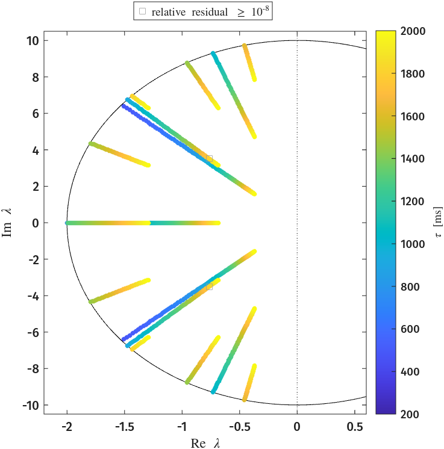
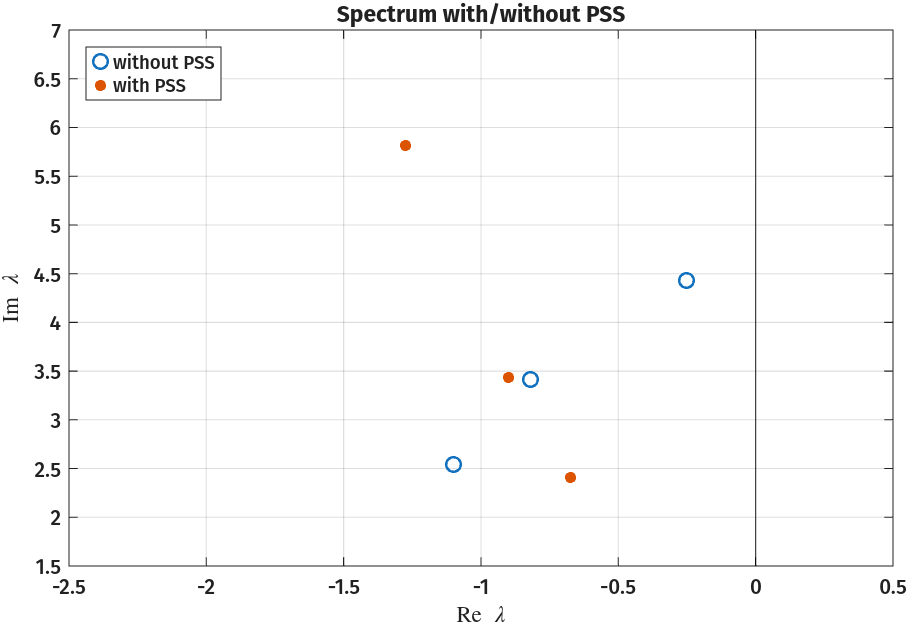
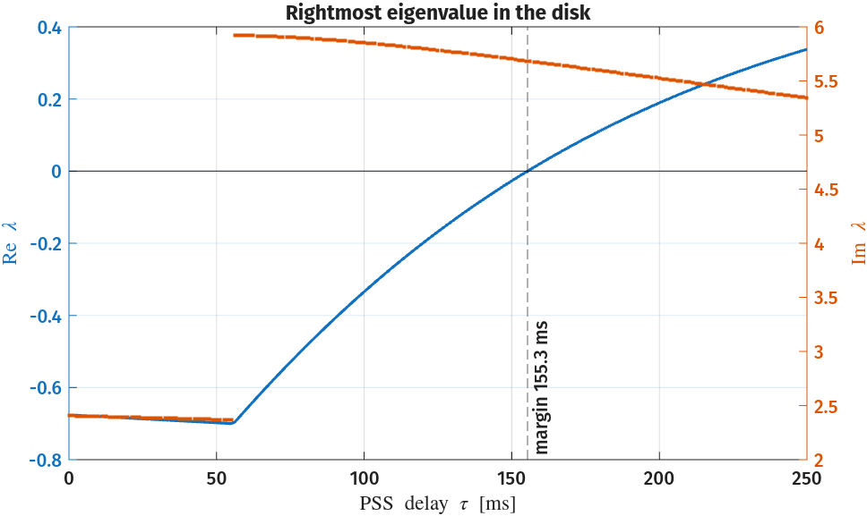
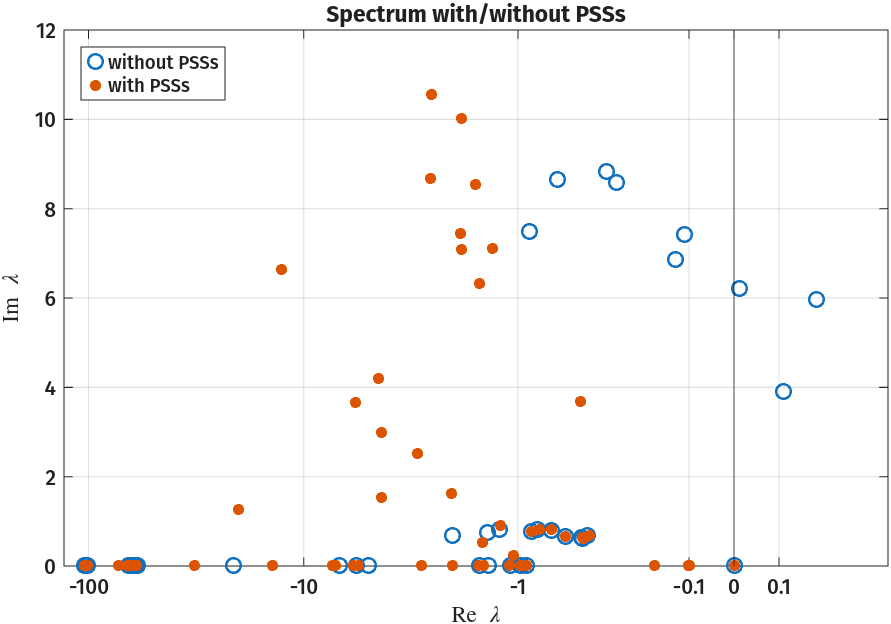
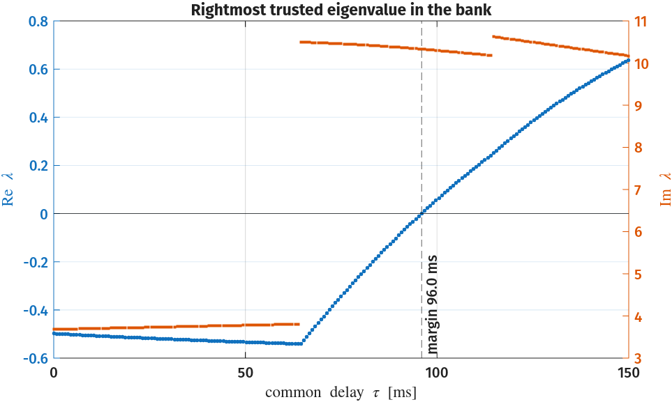
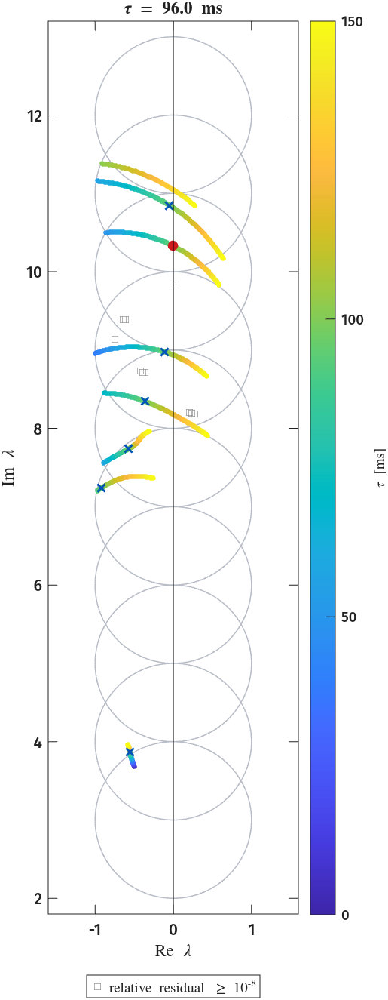
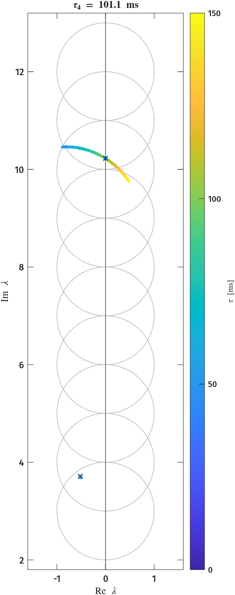

Time-Delay Eigenvalue Problems
Many physical systems carry a time delay \( \tau \): a signal, a wave, or a measurement arrives some time after it is produced. When systems incorporate a delay, it is often of interest to determine for which delay the system becomes unstable i.e. to determine the stability margin of the system. For continuous-time systems, this is given by the smallest \( \tau \) such that poles of the system have zero real part. A general delay system can be written in the following form
where \( \tau = \left[ \tau_1, \ldots, \tau_{k_m} \right]^\top \in \mathbb{R}^{k_m} \) is a set of constant delays. When \( \phi \) depends only on the first three arguments, we say that that the system is retarded and, otherwise, we say that it is neutral. Below are two examples of such systems with only a single delay
Seeking solutions of the form \( x(t) = e^{\lambda t}\vec{v} \) turns the stability question for these systems into a nonlinear eigenvalue problem \( \mathbf{T}(\lambda, \tau)\,\vec{v} = 0 \). After some algebraic manipulations, the above equations become
Unlike polynomial or rational eigenvalue problems, these are transcendental in \( \lambda \); there are infinitely many eigenvalues, and no exact, finite linearisation exists.
On any bounded region of the complex plane, however, there exist only
finitely many eigenvalues, and we can use CIMs to recover eigenpairs in a domain of interest.
All three examples below use the same multi-point Loewner mode.
The realisation size \( m \) sits at the largest gap in the singular values of the Loewner matrix \( \mathbb{D} \) (even when the gap is smaller than \( 10^3 \)).
A contour whose sample moments are at noise level, below options.EmptyTol \( = 10^{-10} \) relative to their bound, is read as empty, with \( m = 0 \).
Eigenvalues with relative residual \( \lVert \mathbf{T}(\lambda)\mathbf{v} \rVert_2 / \lVert \mathbf{T}(\lambda) \rVert_F \geq 10^{-8} \) are drawn as empty grey boxes.
1. A partial element equivalent circuit1
A partial element equivalent circuit (PEEC) models a three dimensional circuit interconnect with propagation delay; they are written as delay differential equations. Time-domain solvers are less robust for these equations than for ordinary circuits, so it matters when the model itself is stable2. To this end we consider a test circuit of Bellen, Guglielmi and Ruehli2 given by the neutral delay differential equation
where the matrices are
Our problem of interest is given as
We can track the eigenvalues of the delay problem as \( \tau \) increases inside, say, an ellipse centred at the origin.
Code (the ellipse CIM and the delay sweep)
beta = -7;
L = 100*[beta 1 2; 3 -9 0; 1 2 -6];
M = 100*[1 0 -3; -0.5 -0.5 -1; -0.5 -1.5 0];
N = [-1 5 2; 4 0 3; -2 4 1]/72;
I = eye(3);
T = @(s,tau) s*(I - N*exp(-s*tau)) - L - M*exp(-s*tau);
c = Numerics.Contour.Ellipse(0, 2, 10, 1e4); % semi-axes 2 and 10, 1e4 quadrature nodes
rng(0);
tau = 1;
op = Numerics.OperatorData(@(s) T(s,tau));
cim = Numerics.CIM(op, c);
cim.RealizationData.ComputationalMode = Numerics.ComputationalMode.MPLoewner;
cim.RealizationData.K = 500; cim.SampleData.ell = 3; cim.SampleData.r = 3;
% m from the largest singular-value gap of the Loewner matrix; 0 for an empty ellipse
cim.RealizationData.AutoRank = true;
% Each new op.T is sampled on the same contour, with the same probes and shifts.
taus = linspace(0.2, 2, 201);
ews = cell(size(taus)); rr = cell(size(taus));
for k = 1:numel(taus)
op.T = @(s) T(s,taus(k));
[V, D] = cim.eigs(); z = diag(D);
in = c.inside(z);
ews{k} = z(in);
rr{k} = Numerics.relres(op.T, z(in), V(:,in), op.sample_mode);
end

Plotting code (tau_sweep.png)
The sweep script src/demos/peec/milano_peec_1.m writes ews and their relative residuals rr to peec_tau_sweep.csv, which this script reads.
here = fileparts(mfilename('fullpath'));
S = readtable(fullfile(here, 'peec_tau_sweep.csv'));
tau_ms = 1000*S.tau;
trusted = S.relres < 1e-8;
untrusted = S.relres >= 1e-8;
f = figure('Color', 'w', 'Position', [100 100 500 530]);
hold on; box on;
th = linspace(0, 2*pi, 400);
plot(2*cos(th), 10*sin(th), 'k-');
xline(0, 'k:');
scatter(S.re(trusted), S.im(trusted), 14, tau_ms(trusted), 'filled');
hu = plot(S.re(untrusted), S.im(untrusted), 's', 'LineStyle', 'none', 'MarkerFaceColor', 'none', 'MarkerEdgeColor', [0.6 0.6 0.6]);
legend(hu, 'relative residual \geq 10^{-8}', 'Interpreter', 'tex', 'Location', 'northoutside');
colormap(parula); cb = colorbar; clim([min(tau_ms) max(tau_ms)]); cb.Label.String = '\tau [ms]';
xlabel('Re \lambda'); ylabel('Im \lambda'); axis([-2.2 0.6 -10.5 10.5]);
As \( \tau \) grows, eigenvalues enter the ellipse and move toward the imaginary axis. The ellipse holds none at \( \tau = 200 \) ms and 16 at \( \tau = 2000 \) ms. Note that none appear to cross the imaginary axis, and, in fact, this holds for all \( \tau \).
The eigenvalues of \( \mathbf{L} \) are \( -407.9 \) and \( -896 \pm 78i \), so \( \lambda\mathbf{I} - \mathbf{L} \) is invertible for \( \operatorname{Re} \lambda \ge 0 \), and there we can factor
The only poles of \( \mathbf{F} \) are the eigenvalues of \( \mathbf{L} \), so \( \mathbf{F} \) is analytic on the closed right half-plane. Further, writing \( \lambda\mathbf{N} = (\lambda\mathbf{I} - \mathbf{L})\mathbf{N} + \mathbf{L}\mathbf{N} \) gives \( \mathbf{F}(\lambda) = \mathbf{N} + (\lambda\mathbf{I} - \mathbf{L})^{-1}(\mathbf{M} + \mathbf{L}\mathbf{N}) \), a stable proper transfer function with \( \mathbf{F}(\lambda) \to \mathbf{N} \) as \( |\lambda| \to \infty \). Its \( \mathcal{H}_\infty \) norm
is finite, and MATLAB computes it from a state-space realisation.
Code (the small-gain bound)
% T(s) = (sI - L)(I - e^{-s tau} F(s)) with F(s) = N + (sI - L)^{-1}(M + L N).
% L is stable, so ||F||_inf < 1 makes T(s) nonsingular on Re s >= 0 for all tau.
if ~isempty(ver('control')) && license('test', 'Control_Toolbox')
F = ss(L, M + L*N, eye(3), N);
fprintf('eig(L) = %s\n', mat2str(eig(L).', 5));
fprintf('||F||_inf = %.4f\n', hinfnorm(F));
else
fprintf('Control System Toolbox not available: skipping the H-infinity check.\n');
end
For \( \operatorname{Re} \lambda \ge 0 \) we have \( |e^{-\lambda\tau}| \le 1 \), so \( \|e^{-\lambda\tau}\mathbf{F}(\lambda)\|_2 \le 0.6633 < 1 \). Hence, \( \mathbf{I} - e^{-\lambda\tau}\mathbf{F}(\lambda) \Rightarrow \mathbf{T}(\lambda) \) are nonsingular for every \( \tau \ge 0 \).
Note
ss and hinfnorm require the Control System Toolbox.
The rest of this example runs in base MATLAB.
The full demo is src/demos/peec/milano_peec_1.m.
2. A three-bus system with a delayed stabiliser3
Wide-area controllers act on remote measurements, so their inputs arrive delayed. Milano's three-bus system3 is a two-machine network whose electromechanical oscillation is damped by a power system stabiliser (PSS); the PSS input is the rotor speed of machine 1, measured with delay \( \tau \). The small-signal model is given as
This is a retarded delay differential equation \( \mathbf{T}(\lambda,\tau)=\lambda\mathbf{I}-\mathbf{A}_0-\mathbf{A}_1 e^{-\lambda\tau} \), with \( \mathbf{A}_0 \) the state matrix of the machines, the automatic voltage regulators (AVRs) and the PSS, and the sparse \( \mathbf{A}_1 \) the delayed speed input of the PSS.
Code (\( \mathbf{A}_0 \), \( \mathbf{A}_1 \) and \( \mathbf{T} \) on 23 states)
As_base_3bus; % 19x19 state matrix of Appendix B, without the PSS
Kw = 10.9; Tw = 14; Tz = 0.5056; Tp = 0.1007; gAVR = 40/0.055;
r = Tz/Tp;
% PSS from omega_r1(t - tau) to v_s: x' = Ap x + Bp u, v_s = Cp x + Dp u
Ap = zeros(4); Bp = zeros(4,1);
Ap(1,1) = -1/Tw; Bp(1) = Kw/Tw;
Cp = [-1 0 0 0]; Dp = Kw;
for k = 2:4
Ap(k,:) = Cp/Tp; Ap(k,k) = Ap(k,k) - 1/Tp; Bp(k) = Dp/Tp;
Cp = r*Cp; Cp(k) = Cp(k) + (1 - r); Dp = r*Dp;
end
% v_s enters the AVR of machine 1; the delayed omega_r1 enters the PSS
n = 23; iw = 2; iva = 16; ip = 20:23;
E = eye(n);
A0 = blkdiag(As, Ap); A0(iva,ip) = gAVR*Cp;
A1 = zeros(n); A1(ip,iw) = Bp; A1(iva,iw) = gAVR*Dp;
T = @(s,tau) s*E - A0 - A1*exp(-s*tau);
One MPLoewner CIM on the circle \( |z - (-0.5 + 4i)| = 2.6 \), with \( K = 50 \) and \( \ell = r = 5 \) fixed probing directions, is reused at 201 delays from 0 to 250 ms.
Code (the CIM, the delay sweep and the margin)
rng(0); % the probing directions are drawn once and kept for every delay
c = Numerics.Contour.Circle(-0.5 + 4i, 2.6, 256);
cim = Numerics.CIM(Numerics.OperatorData(@(s) T(s, 0)), c);
cim.setComputationalMode(Numerics.ComputationalMode.MPLoewner, Numerics.RealizationSize(0, 50));
cim.SampleData.L = randn(n, 5); cim.SampleData.R = randn(n, 5);
cim.RealizationData.AutoRank = true; % m from the largest singular-value gap of the Loewner matrix
tau = linspace(0, 0.25, 201); sweep = cell(size(tau));
for i = 1:numel(tau)
sweep{i} = disk_eigs(cim, @(s) T(s, tau(i)));
end
% the first sign change of the abscissa of the trusted eigenvalues on the grid,
% refined by fzero; a disk without trusted eigenvalues reads as stable
tol = 1e-8; % an eigenvalue with relative residual below tol is trusted
abscissa = @(E) max([real(E.z(E.relres < tol)); -1]);
i = find(cellfun(abscissa, sweep) > 0, 1);
tc = fzero(@(t) abscissa(disk_eigs(cim, @(s) T(s, t))), tau([i-1 i]));
Ec = disk_eigs(cim, @(s) T(s, tc)); Ec = Ec(Ec.relres < tol, :);
[~, j] = max(real(Ec.z)); zc = Ec.z(j);
function E = disk_eigs(cim, Ttau)
% the eigenvalues z of Ttau inside the contour and their relative residuals
op = cim.SampleData.OperatorData;
op.T = Ttau; % new samples; the probes and shifts are kept
[V, Lam] = cim.eigs(); z = diag(Lam);
in = cim.SampleData.Contour.inside(z);
E = table(z(in), Numerics.relres(Ttau, z(in), V(:,in), op.sample_mode), 'VariableNames', {'z', 'relres'});
end
Three eigenvalues are recovered inside the contour at every delay, with relative residuals at most \( 7.5\times10^{-19} \). At \( \tau = 50 \) ms they include the delay-critical electromechanical mode near \( -0.75 \pm 5.92i \). Sweeping \( \tau \) drives it across the imaginary axis at the delay margin of 155.3 ms, where it crosses at \( \pm 5.684i \).
| Spectrum with and without the PSS | Delay-induced instability |
|---|---|
 |
 |
The left plot shows the critical portion of the spectrum with and without the PSS.
The right plot shows the rightmost eigenvalue in the disk against \( \tau \).
The model is built by src/demos/3bus/milano_3bus_ex11_1.m.
milano_3bus_spectra.m and milano_3bus_sweep.m in the same folder compute the data, and milano_3bus_figures.m draws both figures from their CSVs.
Plotting code (spectra.png, delay_margin.png)
here = fileparts(mfilename('fullpath'));
Sp = readtable(fullfile(here, 'spectra.csv'), 'TextType', 'string');
Sp = Sp(Sp.im >= 0, :);
nop = Sp(Sp.system == "nopss", :); wp = Sp(Sp.system == "pss", :);
f = figure('Position', [100 100 680 420]);
plot(nop.re, nop.im, 'o', 'MarkerSize', 7, 'LineWidth', 1.2); hold on;
plot(wp.re, wp.im, '.', 'MarkerSize', 16);
xline(0, 'k-');
xlim([-2.5 0.5]); ylim([1.5 7]);
xlabel('Re \lambda'); ylabel('Im \lambda');
legend('without PSS', 'with PSS', 'Location', 'northwest');
title('Spectrum with/without PSS'); grid on;
here = fileparts(mfilename('fullpath'));
S = readtable(fullfile(here, 'sweep.csv'));
M = readtable(fullfile(here, 'margin.csv'));
tc = M.margin_ms(1);
ok = S.relres < 1e-8;
U = S(~ok, :); S = S(ok, :);
[tau, ~, g] = unique(S.tau_ms);
zs = complex(S.re, S.im);
z = splitapply(@(w) w(find(real(w) == max(real(w)), 1)), zs, g);
f = figure('Position', [100 100 680 380]);
boxstyle = {'s', 'MarkerFaceColor', 'none', 'MarkerEdgeColor', [0.6 0.6 0.6]};
yyaxis left
plot(tau, real(z), '-', 'LineWidth', 1.5); hold on;
if height(U) > 0
hu = plot(U.tau_ms, U.re, boxstyle{:});
legend(hu, 'relative residual \geq 10^{-8}', 'Interpreter', 'tex', 'AutoUpdate', 'off');
end
yline(0, 'k-');
ylabel('Re \lambda');
yyaxis right
plot(tau, imag(z), '.', 'MarkerSize', 6);
if height(U) > 0; plot(U.tau_ms, U.im, boxstyle{:}); end
ylabel('Im \lambda');
xline(tc, '--', sprintf('margin %.1f ms', tc), 'LabelVerticalAlignment', 'bottom');
xlabel('PSS delay \tau [ms]'); title('Rightmost eigenvalue in the disk'); grid on;
3. Ten Delayed PSSs on a 39-bus power network6
The IEEE PES benchmark version of the New England 39-bus network5 is a published model with ten generators, each with a PSS67. It is given as a differential algebraic equation (DAE)
where \(f\) contains the variables related to generator state, inertia, automatic voltage regulators (AVRs), PSSs, loads, and transmission lines.
From the provided Ared.mat, we are given \( A_\text{red} = f_x - f_y g_y^{-1} g_x \), a structured sparse matrix that corresponds to the state of an autonomous LTI system that describes the linearized and reduced DAE.
From the state layout of the report's Table 11, we can identify the PSS components explicitly.
Without the PSSs the network is unstable, with rightmost eigenvalue \( +0.20 + 5.97i \);
with them it is stable, and the rightmost of its oscillatory modes is \( -0.50 + 3.68i \).

Plotting code (pes39_spectra.png)
pes39_spectra.m writes spectra.csv, which this script reads.
here = fileparts(mfilename('fullpath'));
Sp = readtable(fullfile(here, 'spectra.csv'), 'TextType', 'string');
Sp = Sp(Sp.im >= 0, :);
% asinh is linear within about sigma of zero and logarithmic beyond, so the
% electromechanical modes near the axis and the exciter poles near -100 both stay legible
sigma = 0.1;
plog = @(x) asinh(x/(2*sigma))/log(10);
nop = Sp(Sp.system == "nopss", :); wp = Sp(Sp.system == "pss", :);
f = figure('Position', [100 100 680 420]);
plot(plog(nop.re), nop.im, 'o', 'MarkerSize', 7, 'LineWidth', 1.2); hold on;
plot(plog(wp.re), wp.im, '.', 'MarkerSize', 16);
xline(0, 'k-');
ticks = [-100 -10 -1 -0.1 0 0.1];
xticks(plog(ticks)); xticklabels(string(ticks)); xlim(plog([-130 0.5]));
xlabel('Re \lambda'); ylabel('Im \lambda');
legend('without PSSs', 'with PSSs', 'Location', 'northwest');
title('Spectrum with/without PSSs'); grid on;
To each identified PSS, we apply a delay, yielding the following retarded problem with ten delays
where \( \mathbf{e}_k \) selects the speed of the \( k \)th generator and \( \mathbf{b}_k \) holds \( x_W, x_P, x_Q, E_{fd}, \) and \( x_i \). See the report6 for more details.
Code (\( \mathbf{T}(\lambda, \tau) \) from \( \mathbf{A}_0 \), \( \mathbf{B} \) and \( \mathbf{E} \))
First, we track the rightmost eigenvalue as the common delay \( \tau = \tau_k \) grows, with ten overlapping disks of radius \( \rho = 1 \) centred at \( 3i, 4i, \dots, 12i \). Each disk is an independent CIM computation, so the disks can run in parallel4. A disk returns every eigenvalue it finds inside its contour, and an eigenvalue found by two disks is kept only once via the smaller residual. In the common-delay and single-loop sweeps below, the trusted residuals are at most \( 9.8\times10^{-11} \) in the common-delay sweep.
Code (the disk bank and the trust rule)
arguments
Tf
opts.Centers (1,:) double = 3:12
opts.Radius (1,1) double = 1
opts.Nodes (1,1) double = 128
opts.Mode (1,1) Numerics.ComputationalMode = Numerics.ComputationalMode.MPLoewner
opts.Probes (1,1) double = 5
opts.K (1,1) double = 50
opts.Seed (1,1) double = 0
opts.ResTol (1,1) double = 1e-8
opts.EmptyTol (1,1) double = 1e-5 % moment level: occupied disks >= 2.5e-3, leakage only <= 1.1e-6
end
% One CIM per disk, all sharing the operator op and the probes L and R. Setting
% op.T resamples every disk; the probes and interpolation points stay. AutoRank
% reads a disk whose moment level is below EmptyTol as empty, and otherwise
% realizes at the largest singular-value gap of its data matrix.
op = Numerics.OperatorData(Tf(zeros(10,1)));
rng(opts.Seed);
L = randn(op.n, opts.Probes); R = randn(op.n, opts.Probes);
cims = cell(size(opts.Centers));
for k = 1:numel(opts.Centers)
c = Numerics.Contour.Circle(1i*opts.Centers(k), opts.Radius, opts.Nodes);
cim = Numerics.CIM(op, c);
cim.SampleData.L = L; cim.SampleData.R = R;
cim.setComputationalMode(opts.Mode, Numerics.RealizationSize(0, opts.K));
cim.RealizationData.AutoRank = true;
cim.options.EmptyTol = opts.EmptyTol; cim.options.Verbose = false;
cims{k} = cim;
end
function [ew, res, trusted] = eigenvalues(op, cims, T, restol)
% Every eigenvalue a disk finds inside its contour, with its relative residual
% ||T(z)v|| / ||T(z)||_F.
op.T = T;
ew = zeros(0,1); res = zeros(0,1);
for k = 1:numel(cims)
[V, D] = cims{k}.eigs(); z = diag(D);
in = cims{k}.SampleData.Contour.inside(z);
ew = [ew; z(in)];
res = [res; Numerics.relres(T, z(in), V(:,in), op.sample_mode)];
end
% Overlapping disks find some eigenvalues twice; the copy with the smaller
% residual is kept.
[res, i] = sort(res); ew = ew(i);
keep = true(size(ew));
for j = 2:numel(ew)
keep(j) = all(abs(ew(j) - ew(keep(1:j-1))) > 1e-6*max(1, abs(ew(j))));
end
ew = ew(keep); res = res(keep);
trusted = res < restol;
end
Code (the delay margin)
function [tc, zc, nb] = pes39_margin(bank, u)
% Delay margin along the delay direction u (10 x 1): the smallest r at which
% the bank of pes39_bank.m trusts an eigenvalue with positive real part at
% tau = r u. Returns Inf when nothing crosses by 500 ms. zc is the rightmost
% trusted eigenvalue at the margin tc, and nb the number of bank evaluations.
% Step outward from 50 ms until the rightmost trusted eigenvalue crosses, then
% refine the crossing with fzero. The bank's fixed probes make the abscissa a
% deterministic function of r.
r = 0.05; dr = 0.005; rmax = 0.5;
[a, z] = abscissa(bank, r*u); nb = 1;
assert(~isnan(z), 'pes39_margin:empty', 'the bank trusts no eigenvalue at tau = %g s', r);
assert(a < 0, 'pes39_margin:start', 'not stable at tau = %g s', r);
while a <= 0
r = r + dr;
if r > rmax, tc = Inf; zc = NaN; return; end
a = abscissa(bank, r*u); nb = nb + 1;
end
[tc, ~, ~, out] = fzero(@(x) abscissa(bank, x*u), [r - dr, r]);
[~, zc] = abscissa(bank, tc*u);
nb = nb + out.funcCount + 1;
end
function [a, z] = abscissa(bank, tau)
% The rightmost trusted eigenvalue z in the bank at the delays tau and its real
% part a; a = -1 and z = NaN when the bank trusts none.
[ew, ~, trusted] = bank(tau);
ew = ew(trusted);
if isempty(ew), a = -1; z = NaN; return; end
[a, i] = max(real(ew)); z = ew(i);
end
Code (the common-delay sweep)
bank = pes39_bank(Tf); one = ones(10,1);
cols = {'tau_ms', 're', 'im', 'res', 'trusted'};
tau = linspace(0, 0.15, 201); sweep = cell(numel(tau), 1);
for j = 1:numel(tau)
[ew, res, trusted] = bank(tau(j)*one);
sweep{j} = table(repmat(1e3*tau(j), numel(ew), 1), real(ew), imag(ew), res, trusted, 'VariableNames', cols);
end
We find that the stability margin of the entire system is \( \sim 96 \) ms. The rightmost eigenvalue switches from \( 3.81i \) to \( 10.49i \) between 63.75 and 64.50 ms, and again, from \( 10.18i \) to \( 10.62i \), at about 114 ms. The left CIM bank figure below shows trajectories as the common delay grows from \( 0 - 150 \) ms.
Next, we examine the effect of a delay on a single PSS, as if it had a sudden drop in a speed signal; we take \( \tau = \tau_k \mathbf{e}_k \) for \( k = 1, \ldots, 10 \), while the other nine act without delay. The table below shows the delayed PSS, its rightmost eigenvalue at the stability margin, and the corresponding delay. Note that the PSS on generators 1 and 10 with individual delays did not make the system unstable up to a delay of 500 ms. The right CIM bank figure shows the eigenvalue trajectory associated with the delay associated with the worst case, generator 4.
Rightmost \( \operatorname{Re}\lambda \) against the common delay

Delay margin with a single delayed PSS
| Generator | Rightmost eigenvalue at the margin | Delay margin [ms] |
|---|---|---|
| 1 | --- | --- |
| 2 | \( 7.675i \) | 178.32 |
| 3 | \( 8.845i \) | 114.35 |
| 4 | \( 10.222i \) | 101.06 |
| 5 | \( 7.001i \) | 250.56 |
| 6 | \( 8.673i \) | 252.49 |
| 7 | \( 10.552i \) | 157.11 |
| 8 | \( 10.828i \) | 101.30 |
| 9 | \( 8.257i \) | 114.33 |
| 10 | --- | --- |
| The disk bank as the common delay grows | The disk bank as \( \tau_4 \) grows |
|---|---|
 |
 |
The model is built by src/demos/pes39/pes39_model.m.
In the same folder, pes39_spectra.m, pes39_common_margin.m, pes39_single_margin.m, pes39_sweep.m and pes39_single_sweep.m compute the data, and pes39_figures.m draws the four figures from their CSVs.
-
D. Yue and Q.-L. Han, "A Delay-Dependent Stability Criterion of Neutral Systems and its Application to a Partial Element Equivalent Circuit Model," IEEE Transactions on Circuits and Systems II: Express Briefs, vol. 51, no. 12, pp. 685-689, 2004, doi: 10.1109/TCSII.2004.837286. ↩
-
A. Bellen, N. Guglielmi, and A. E. Ruehli, "Methods for Linear Systems of Circuit Delay Differential Equations of Neutral Type," IEEE Transactions on Circuits and Systems I: Fundamental Theory and Applications, vol. 46, no. 1, pp. 212-216, 1999. ↩↩
-
Milano, Dassios, Liu, and, Tzounas, Eigenvalue Problems in Power Systems. Boca Raton, FL: CRC Press, 2020. The three-bus system is defined in Appendix A, A_S is given in Appendix B; the delayed-PSS study is Example 11.1, and the PSS design is Example 4.3. ↩↩
-
S. Gao, Z. Du, and Y. Li, "Estimating Number of Critical Eigenvalues of Large-Scale Power System Based on Contour Integral," IEEE Transactions on Power Systems, vol. 36, no. 6, pp. 5854-5862, 2021, doi: 10.1109/TPWRS.2021.3084683. ↩
-
T. Athay, R. Podmore, and S. Virmani, "A Practical Method for the Direct Analysis of Transient Stability," IEEE Transactions on Power Apparatus and Systems, vol. PAS-98, no. 2, pp. 573-584, 1979 (the New England 39-bus system). ↩
-
I. Hiskens, "IEEE PES Task Force on Benchmark Systems for Stability Controls: Report on the 39-bus system (New England reduced model)," working paper, 2013, https://cmte.ieee.org/pes-psdp/benchmark-systems-2/. ↩↩↩
-
C. Cañizares, T. Fernandes, E. Geraldi Jr., L. Gérin-Lajoie, M. Gibbard, I. Hiskens, et al., "Benchmark Models for the Analysis and Control of Small-Signal Oscillatory Dynamics in Power Systems," IEEE Transactions on Power Systems, vol. 32, no. 1, pp. 715-722, 2017, doi: 10.1109/TPWRS.2016.2561263. ↩